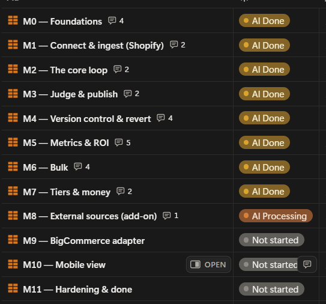

Selected AI applications & systems
Software that runs
Client platforms, in-house tools, and builds in flight. Every one of them is real software, not a proposal.

E-commerce Intelligence Platform — Tromml Inc.
Built and shipped an e-commerce intelligence platform alongside a senior AI Engineer/CTO, using AI-accelerated development throughout. Python, dbt, PostgreSQL, BigQuery, and Looker Studio behind an interface that lets business users query complex operational data through natural-language interaction instead of filing analyst requests. Reached $20k MRR as a subscription product.
The $30M Data Backbone — Auto SOSS Inc. / Shock Surplus
The pricing, inventory, forecasting, and operational automation systems that carried an eight-figure e-commerce brand from $300K to $30M in annual revenue. Written in Python and SQL, designed and owned end to end while serving as COO — the engineering and the P&L were the same job.

Notion–GitHub AI Dev Command Center
A bespoke command center for AI-accelerated development: a skills-based planning, project-management, and AI-supervision suite built on a Python engine that wires Claude Code, OpenAI Codex, GitHub, Notion, and BigQuery into a single pipeline. Every agent action is planned against a tracked task, logged, and reviewable — transparent human + agent software development at blistering speed, with an audit trail rather than a black box.

SetMaster 3
An offline, cross-platform desktop-class web application — TypeScript and React over a Python analysis engine, shipping double-clickable installers for Windows and macOS with no terminal required. Parses a proprietary XML catalog format strictly read-only and reconciles it against third-party API exports through years of accumulated name-normalization and fuzzy-matching heuristics, with compound filtering and a structured editor over the result. Now at v3.0.3 after three issue-driven fix rounds; it replaces a Python/Excel-VBA prototype used professionally for years.

pdpd
An AI e-commerce frontend tool that fixes, generates, A/B tests, and version-controls product description page catalogs running to millions of pages. Python and FastAPI with a per-instance Postgres cluster and cloud-ready storage, model, and secrets seams. In alpha, built from a full written specification.

BQL Analytics Provisioner
Provisions a standardized, layered BigQuery analytics environment — raw, staging, clean, analysis — and wires Looker Studio on top, in minutes instead of a week of console clicks. Python CLI, built so the client owns the Google Cloud project and can revoke consultant access at any time.

Time-Trackify
An agent that reconstructs a workday from the evidence it already left behind — local repositories, GitHub, Notion, calendar, and mail — matches each session to a real project, and pushes billable entries to Clockify with provenance attached. Python, local-first, privacy-scoped by design.

Pictured: the program’s intake & delivery system
AI Coaching Program & Curriculum
An applied AI enablement program built on a five-tier ability model and three role tracks, from professionals who have never used AI to engineers already shipping with it. Covers prompting that transfers context, memory and project configuration, verification habits that make AI output safe to sign, and confidentiality judgment fitted to a student’s industry and employer policy — the last of which makes it usable in law, healthcare, finance, education, and HR.